🌱 我们的队员
一群有爱有梦的青年，奔赴隆回九龙
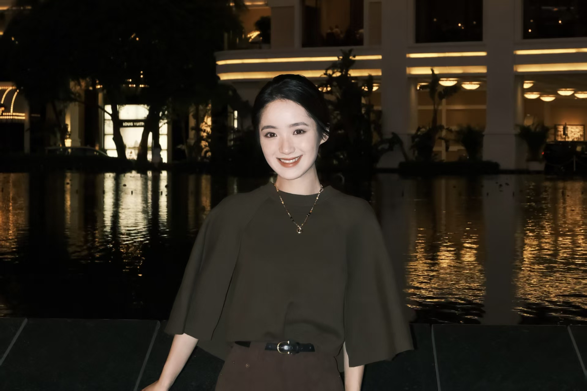
俞佳怡
俞佳怡，女，中共党员，北京科技大学资源与安全工程学院2025级本科生辅导员，测控技术与仪器专业学士学位。曾获北京科技大学十佳志愿者、优秀学生干部、优秀共青团干部。
寄语：“祝愿同学们能在这次支教中有所奉献，有所收获。”
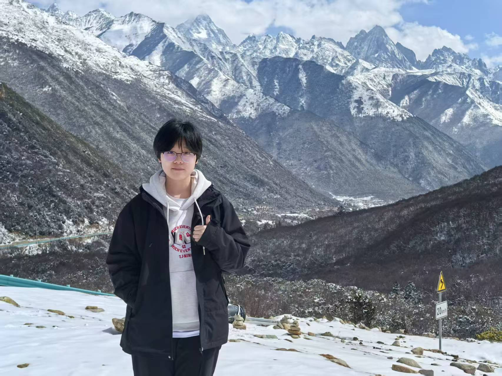
赵雅淇
大家好，我是长青青耘小队的指导学姐赵雅淇。很开心能够参与本次支教带队工作，希望尽自己所能为大家答疑引路，和各位队员扎根基层、传递温暖。平时喜欢阅读、公益志愿活动，也热爱徒步采风，期待和小队伙伴并肩同行，圆满完成支教旅程！
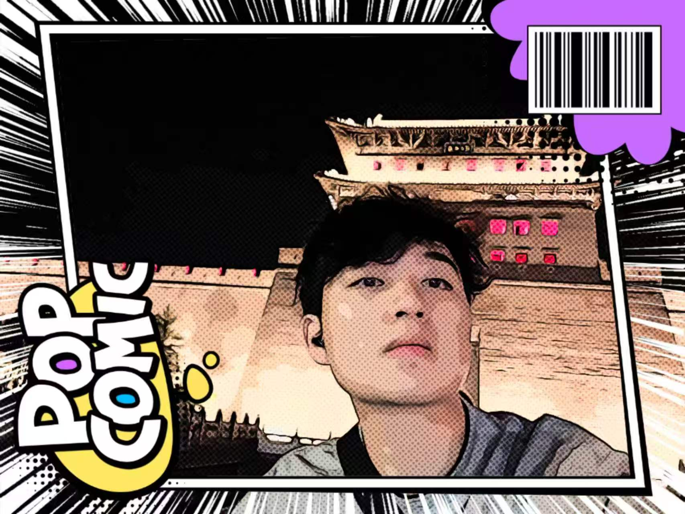
欧阳子轩
大家好，我是支教团队长欧阳子轩，生于隆回，负笈京华。我的MBTI是ENFP，性格开朗热心，擅长统筹团队事务。课余常打羽毛球，喜欢四处旅行，闲时也会安静读读书。从隆回出发奔赴远方，如今以支教之名回归故土。比起宏大理想，我想踏踏实实回到家乡，陪伴家乡的孩子，做好每一堂课。作为队长，我会扛起责任，用心团结团队，带着真诚与耐心，完成这场脚踏实地的乡土奔赴。
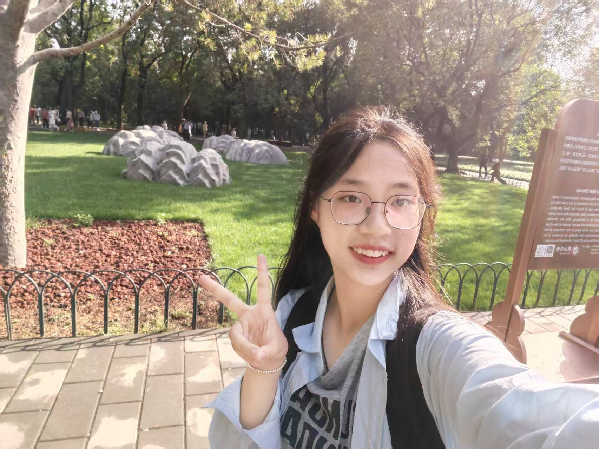
何雅婷
何雅婷，未来技术学院纳米25班。作为本次支教团队副队长，在校担任班级班长，日常负责各类集体事务策划统筹，做事细心沉稳，具备不错的沟通协调能力。平日里热心公益志愿活动，始终对乡村支教满怀向往。此番支教活动，愿耐心陪伴当地孩童，认真备好每一堂课程，传递新知识与善意。也希望扎根乡土收获别样感悟，在奉献中历练自我，践行青年责任。
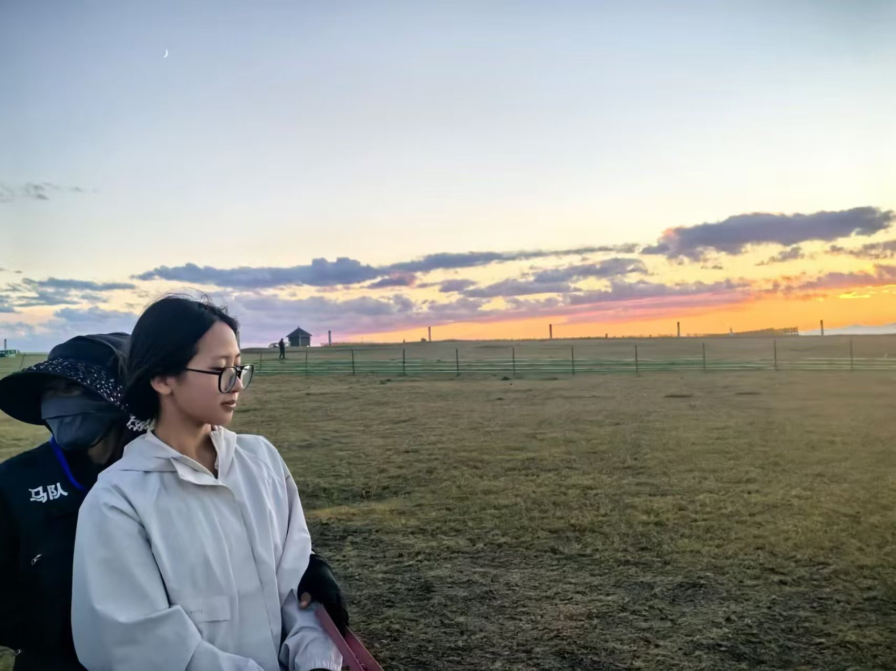
段美艳
我是化学2502班的段美艳，性格比较内向，积极乐观，待人真诚友善。平时喜欢睡觉，偶尔打打游戏。在团队协作中乐于倾听他人想法，也愿意分担工作，善于配合。希望在社会实践中与队友多多交流，共同进步。
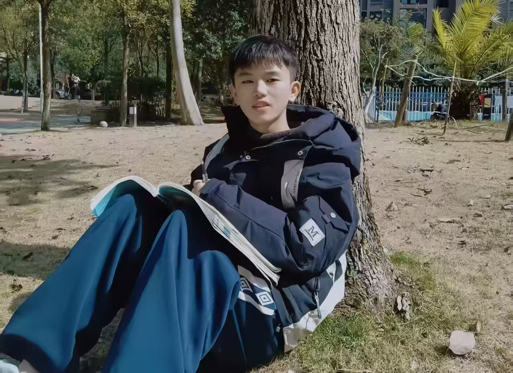
林弘洋
大家好，我是林弘洋，来自湖南怀化。作为典型的INTJ，我性格内敛，习惯观察与思考。我享受学习不同领域的知识，并乐于将它们串联起来，转化为清晰、可行的新点子。非常高兴能够加入长青青耘支教实践团，回到湘西故土开展支教工作。我愿意耐心陪伴孩子们学习成长，用心设计趣味课堂，用理性和热忱陪伴乡村学子，踏实完成本次支教任务。
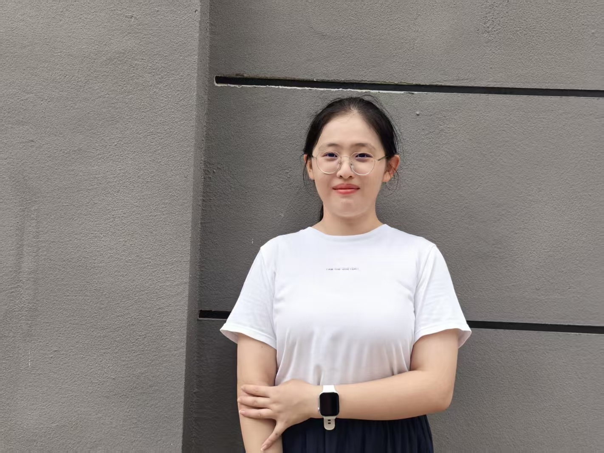
蔡峥阳
大家好！我叫蔡峥阳，来自文法学院，是一个ISTJ文科女。擅长演讲和写文，爱好竞技体育和粤语歌，热衷于在文字中寻找浪漫与热爱。虽是I人但充满热情，期待在社会实践过程中贡献自己的力量，助力本次社会实践活动圆满完成！
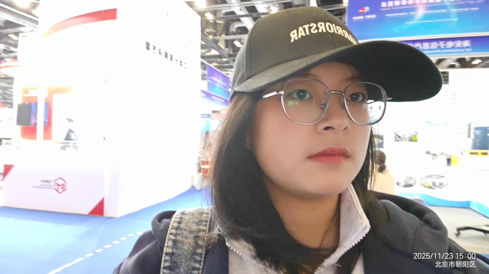
罗湘玲
哈喽～我是志愿者罗湘玲，性格外向乐天的ESFP，籍贯邵阳，参与隆回支教工作。擅长活跃氛围，乐于和孩子们相处，我准备结合各类趣味小实验，带大家感受化学的独特魅力。闲暇之余热爱乒乓球运动，期待和小朋友们相伴，课上探索科学奥秘，课后一同打球嬉戏，以热忱之心陪伴大家，度过轻松美好的夏日时光。

罗子舒
大家好，我是来自智能学院的罗子舒。我从小学习钢琴、舞蹈，多次参与比赛演出，同时拥有主持经验，热爱歌唱与音乐。多年舞台经历让我擅长表达互动，组织文艺活动从容不怯场。我为人沉稳踏实，性格热情开朗，做事认真负责，乐于尝试新事物，愿意从基础做起。我希望发挥文艺特长，为孩子们带来丰富有趣的艺术课堂，用心完成每一项工作，温柔陪伴孩子们成长。
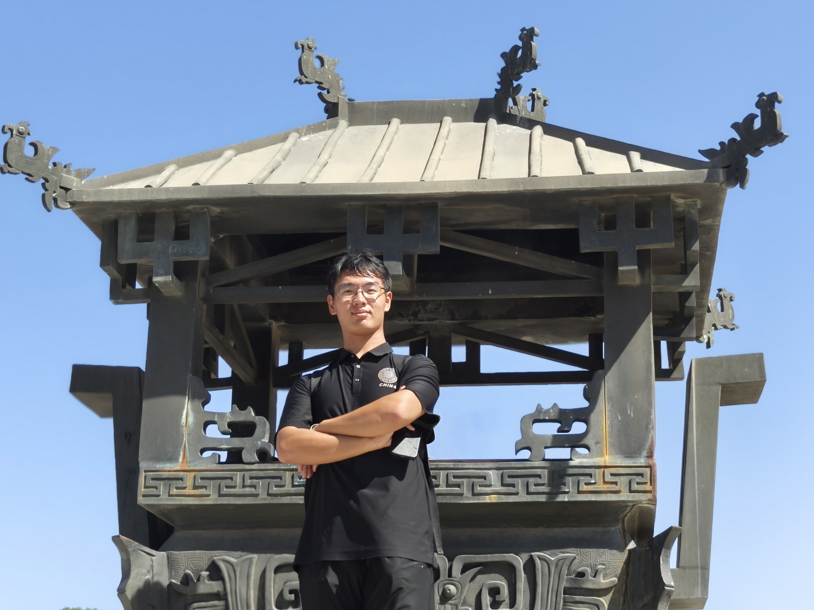
宋沁航
哈喽大家好，我是宋沁航，是青耘小队摄影组的成员。我性格乐观开朗，平常比较活泼好动，排球、篮球、羽毛球都会点小操作。我热爱摄影，喜欢时不时出去逛逛公园或者漫无目的City walk。我平时涉猎广泛，从天文地理到历史人文都略有了解。这次支教，我会用相机定格大家的笑容，用热忱陪伴孩子们成长，也期待在支教的学校里与大家碰撞出精彩火花！
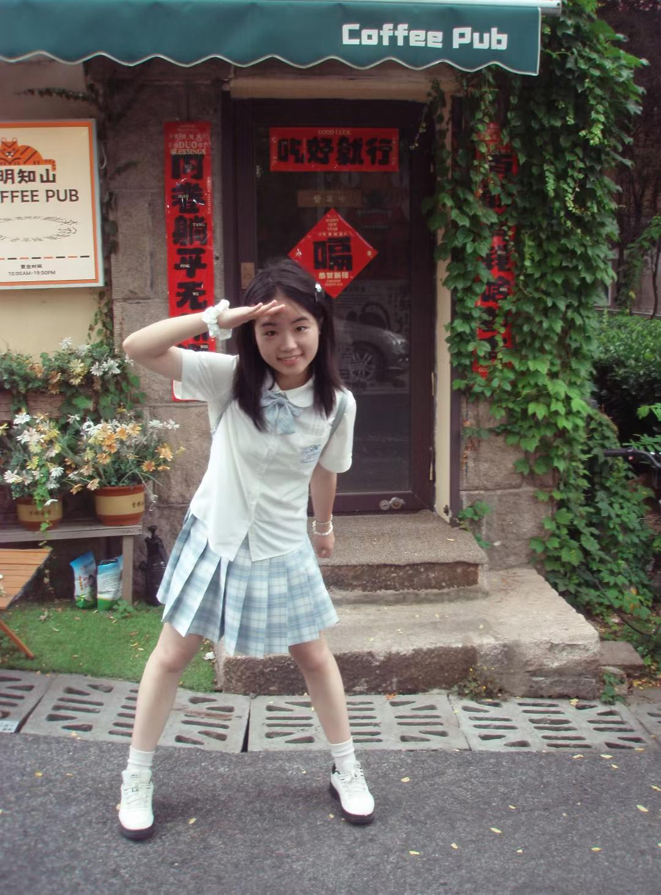
唐宛昕
大家好，我是材料2506班的唐宛昕，家乡在湖南湘潭。我性格开朗随和，平日擅长文案推送、PPT制作与视频剪辑。过往学生工作经历让我具备良好的组织协调能力，做事踏实有责任心。在我看来，支教是一场双向奔赴的温暖相遇，不只是知识的传递，更是爱意的互相交换。我希望把温柔与善意带给每一个期待被看见的小朋友。
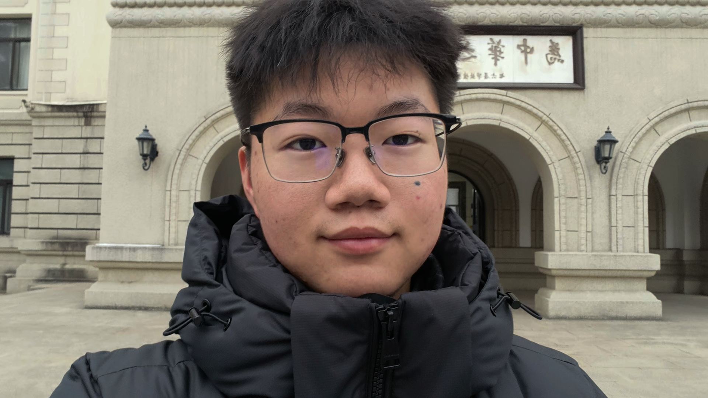
袁和谐
大家好，我叫袁和谐，来自湖南隆回。喜欢打排球，听英文歌，是一名忠实的swifties。同时还热衷于品鉴美食，梦想吃遍世界！作为一名i人，我更善于敏锐观察，协助团队工作。非常高兴能够加入长青青耘小队，期待我们圆满完成此次支教！